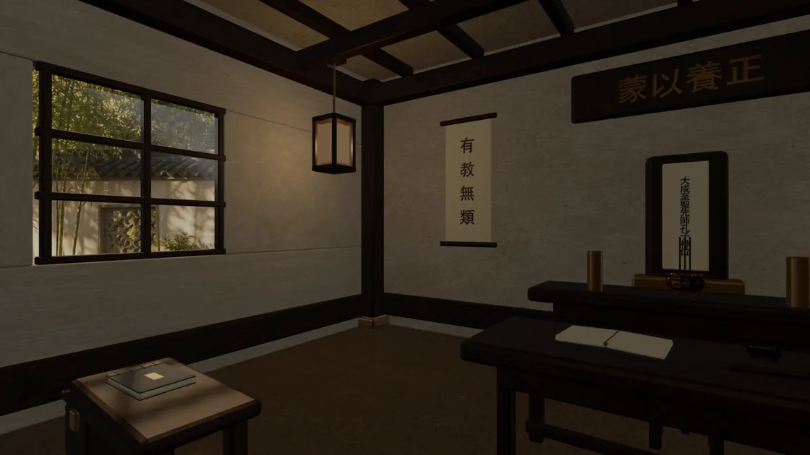
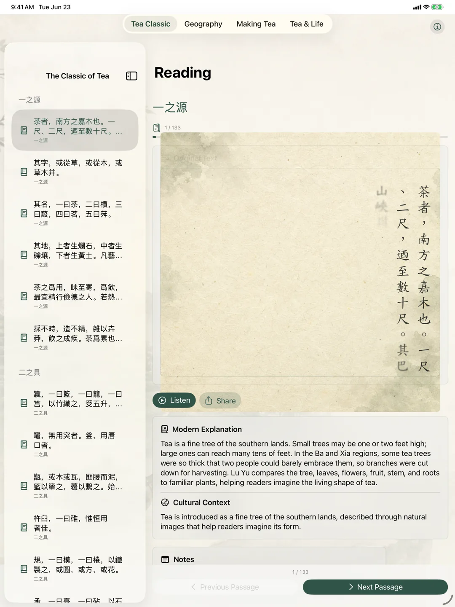
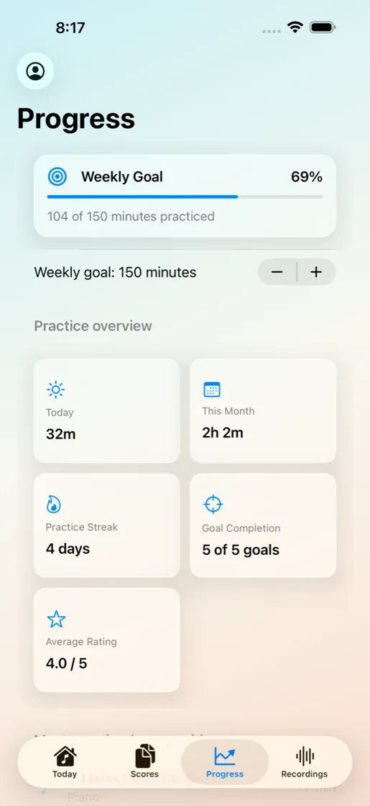
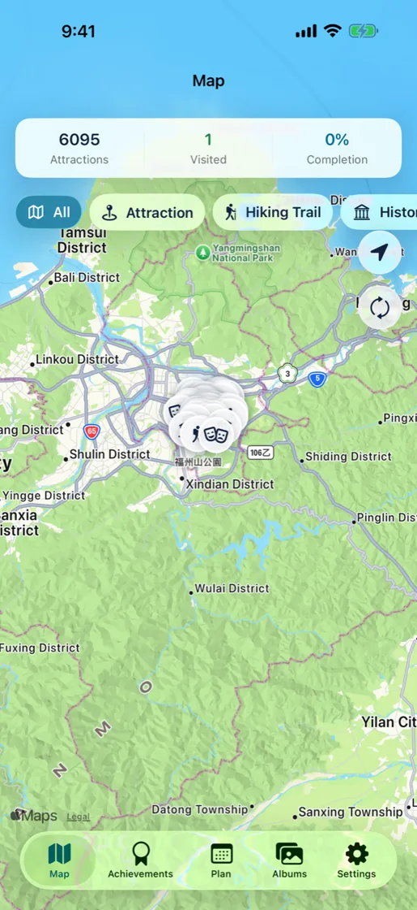
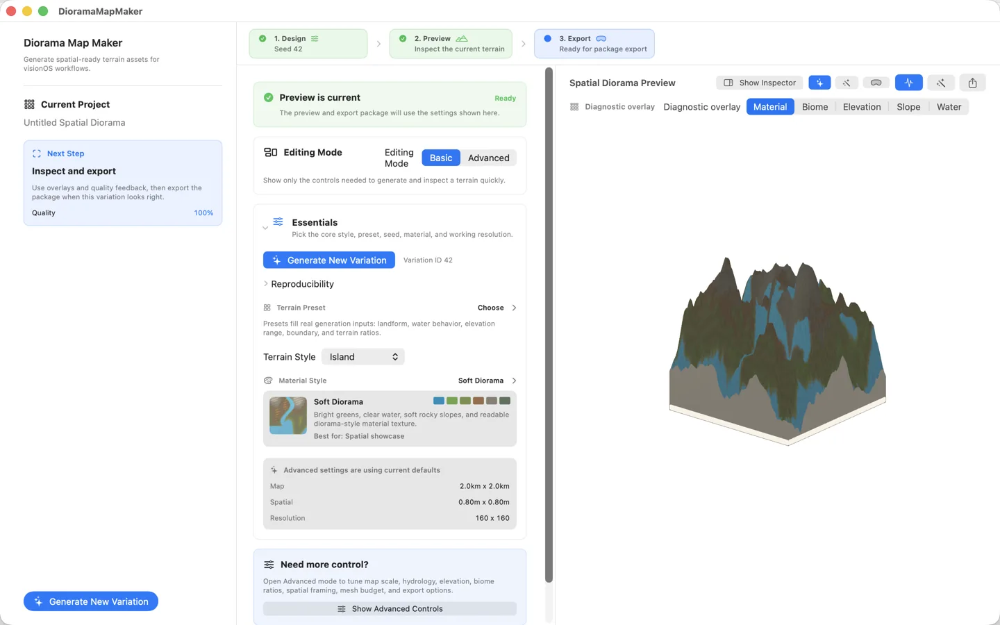
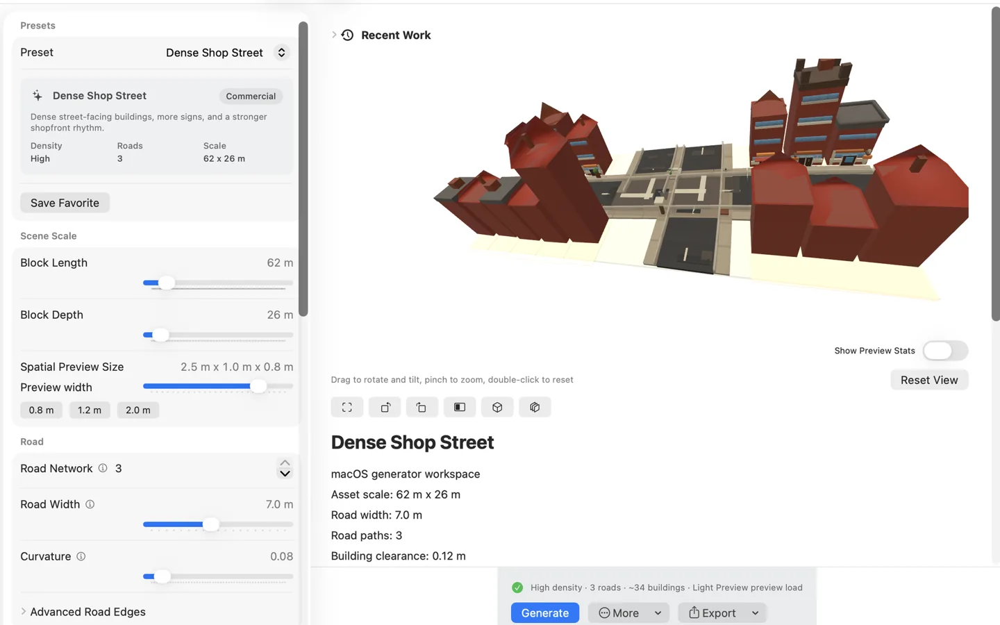
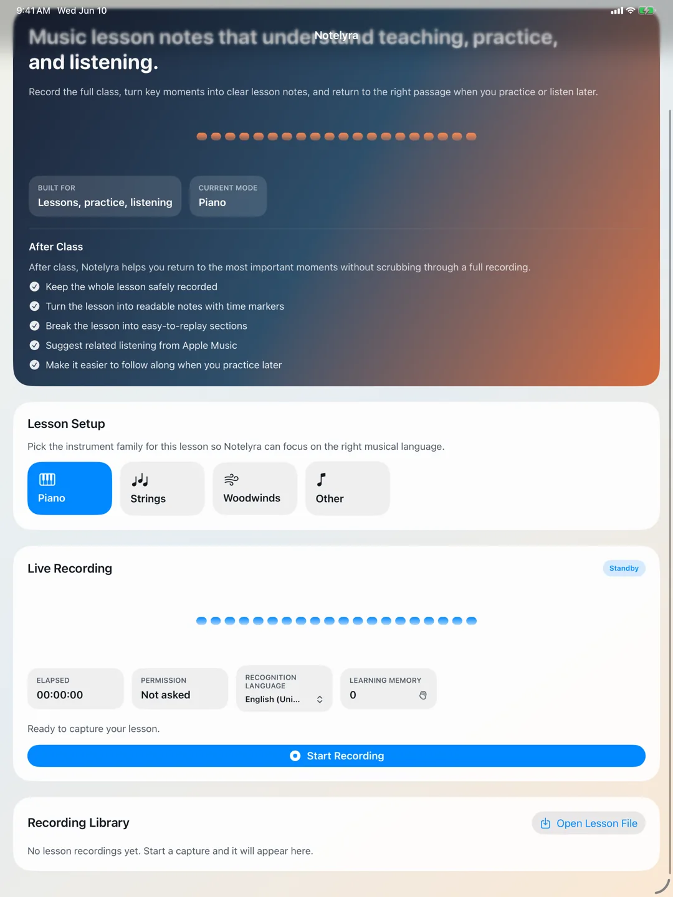
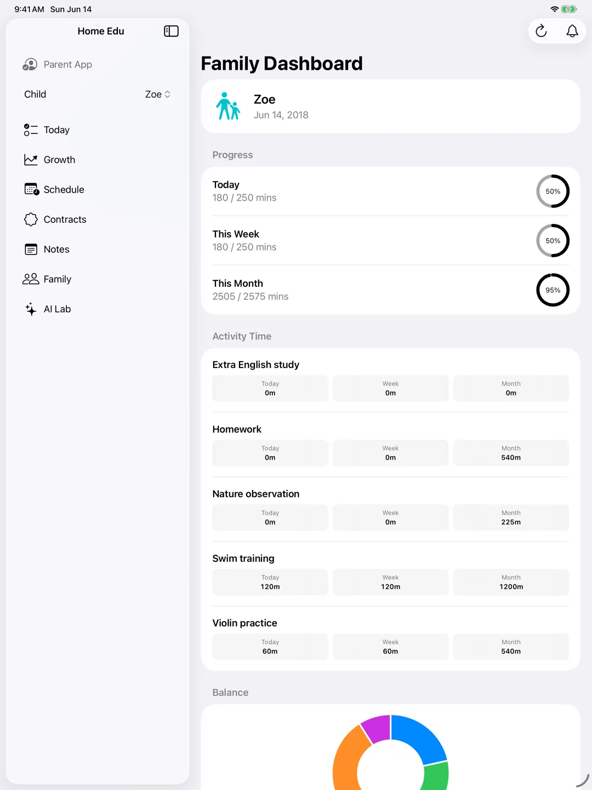
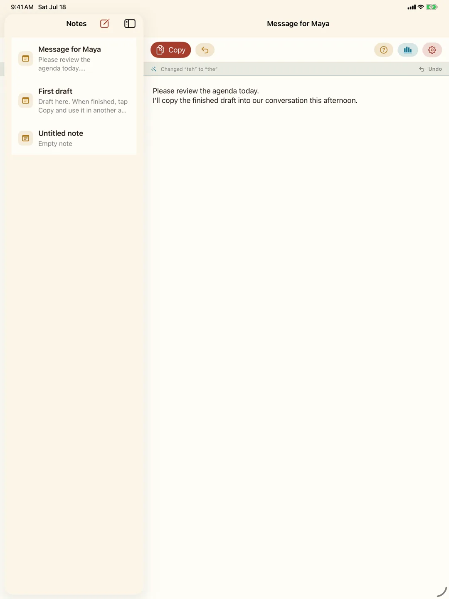

THE COLLECTION
探索所有 App
先選你想做的事，再找適合手上裝置的 App。免費下載、付費作品與課程試用，都有清楚的標示。
還沒有符合的 App
試試其他關鍵字，或放寬裝置與用途條件。


THE COLLECTION
Explore the collection
Start with what you want to do, then choose your device. Paid apps, free downloads, and lesson trials are clearly marked.
No matching apps
Try another keyword or a different device or category.

Vine Window: Spatial Atlas
Explore maps and street views, then revisit places through your geotagged photos.
Store version updated

Sishu Mengguan
Read and listen to four Chinese primers, or enter an immersive school on Vision Pro.
Store version updated

ObjectifyAR
Scan real objects, curate a 3D collection, and open your own museum on Vision Pro.
Store version updated

MuSheetCreator
Turn playing or MIDI into an editable score draft, with the original recording beside it.
Store version updated
MansionGenerator
Set your site, floors, and rooms, then generate a home and inspect its plans and routes.
Store version updated

RealmAtlas
Command kingdoms on a map, then watch armies meet on a spatial battlefield.
Store version updated
Spatial Electronics Lab
Wire components in front of you and learn circuit control, one glowing LED at a time.
Two free lessons; unlock the remaining four with a one-time purchase.
Store version updated

The Book of Tea
Read The Classic of Tea, explore Taiwan’s tea regions, and discover how tea is made.
Store version updated

Oracle Gecko Courtyard
Enter a quiet courtyard and reflect through an I Ching ritual, readings, and private notes.
Store version updated

Melody Journal
Keep scores, a metronome, tuner, and recordings together, with a next step for every practice.
Store version updated

My Taiwan Tour Map
Bring Taiwan attractions, weather, and photo memories together on your personal map.
Store version updated

DioramaMapMaker
Generate 3D landscapes from terrain and vegetation settings for your spatial projects.
Store version updated

DioramaTownBuilder
Generate adjustable 3D streets and explore different towns and architectural styles.
Store version updated
An Ordinary Adventure
Read enemy attacks, gather equipment, and cross twelve impossible worlds.
A compatible controller is required for Vision Pro play.
Store version updated
Dark Invasion
Use gaze, pinch, and throwing to wield four elements and defend an overrun school.
Store version updated

Notelyra
Capture explanations and demonstrations on a timeline, then return to them during practice.
Store version updated

MagicStage
Give a solo home performance a stage setting, refine the foreground, and export with its sound.
Store version updated

Zhuyin Story
Fresh Zhuyin stories, illustrations, and read-aloud support for young readers.
Store version updated
English Saver
Turn Chinese ideas into English, then practise with vocabulary stories and speaking.
Store version updated
Taiwan Animals
Meet Taiwan’s wildlife through photos, illustrations, 3D models, and an immersive landscape.
Currently available for Apple Vision Pro.
Store version updated

Swim Power
Turn swim-time changes into understandable insights for swimmers, parents, and coaches.
Store version updated

Home Edu Assistance
Bring children’s tasks, growth records, and family agreements into one place.
Store version updated
Shiji
Organise attendance, classroom notes, and draft family updates in one place.
Free download; some features require a subscription.
Store version updated
VectraFin
Track spending your way, organise assets and debts, and follow changes over time.
Store version updated

KnowMeNote
A quiet notebook that learns your usual names and phrasing on device.
Store version updated

Zodiac Pair Match
Flip zodiac cards and test your memory in a quick game, on your own or with children.
Free to use.
Store version updated
Taipei Veggie Price
Look up Taipei vegetable prices for a little more context before shopping.
Free to use, with ads.
Store version updated